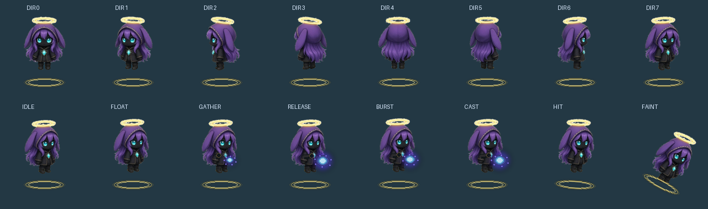

186客户端与构建测试
46真实 Chromium 检查
24桌面／手机恢复战斗
48匹配嵌入文件
修复与证据
| 不能行动仍反击 | 执行时检查 canMove，保留受击唤醒规则 | 复现 · 验证 |
|---|
| 到期状态重新显示 | Stun 发送当前状态，最后禁行动回合仍跳过 | 复现 · 验证 |
|---|
| 恢复候选被阻塞 | 逐个尝试可治疗对象，覆盖仍在骑乘的低血坐骑 | 复现 · 验证 |
|---|
| 气力补充无效 | 匹配体优先语义，按当前受伤对象所需精灵补气 | 复现 · 验证 |
|---|
| 客户端策略与文案 | 两种恢复精灵、复活药识别、无活敌防御与同一阈值 | 复现 · 验证 |
|---|
完整验收报告 · 官方研究依据 · 机器可读发行清单
莉莉丝 · 原生位图动画
风8火2，佩露夏同档成长，偏攻击与敏捷。幽风林缘守护者以双手释放蓝紫能量；幽灵风暴原地覆盖敌半场，并对存活目标附加35%–80%石化概率。32个八向站立帧主体高96–98px，相对雷龙正面145px为66.2%–67.6%；透明边距与脚下光环不计入角色高度。

208帧角色图集，用户原JPG透明提取与分层变形；没有调用图像生成API。原生RGBA半场特效，28帧；独立补丁只增加5个文件。服务端回归 · 客户端回归 · 真实桌面与移动事件 · 素材校验
发行一致性
Go 全量、vet、战斗与自动策略 race 均通过。相同输入重复构建二进制一致，ZIP 逐项匹配公共文件，旧 ZIP 已替换。新增莉莉丝只通过独立5文件补丁分发；Assets原树、数据库与凭据均未进入交付。
Linux AMD64 SHA-256
5184f6b440a4369a6073fb22ae17a83ddbacc3442f0861cd9e2dc163b6b49cc1
ZIP SHA-256
cc4e6f901e15d0664b073acd505aa204de8d54c1d7f938a52b215b98b50284d2
验证边界
实际静态 Linux AMD64 程序、原素材、WebSocket、隔离 SQLite 和真实 Chromium。GPU 使用 SwiftShader，手机尺寸与触屏由浏览器模拟；未进行实体 Android／iOS、Safari、软键盘及系统安全区认证。受控敌人仅存在私有验收数据中，未修改正式 gamedata。
中间工具失败保留并明确披露；最终证据以状态 JSON、摘要、回合事件和验收报告为准。